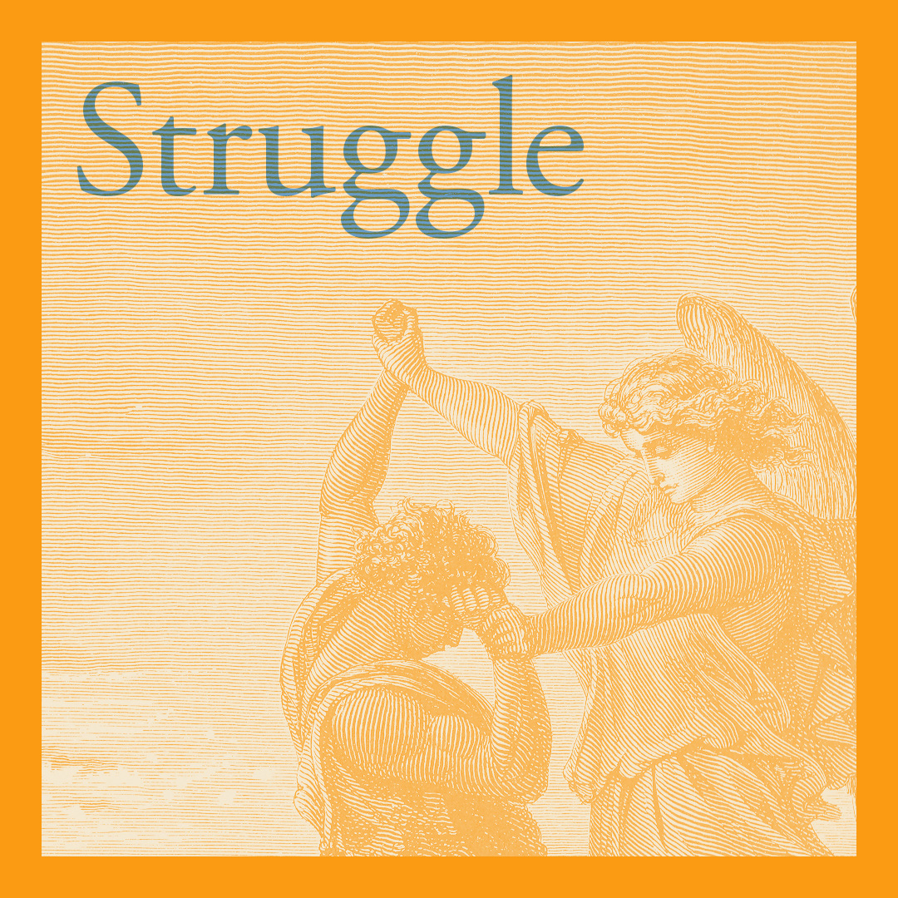
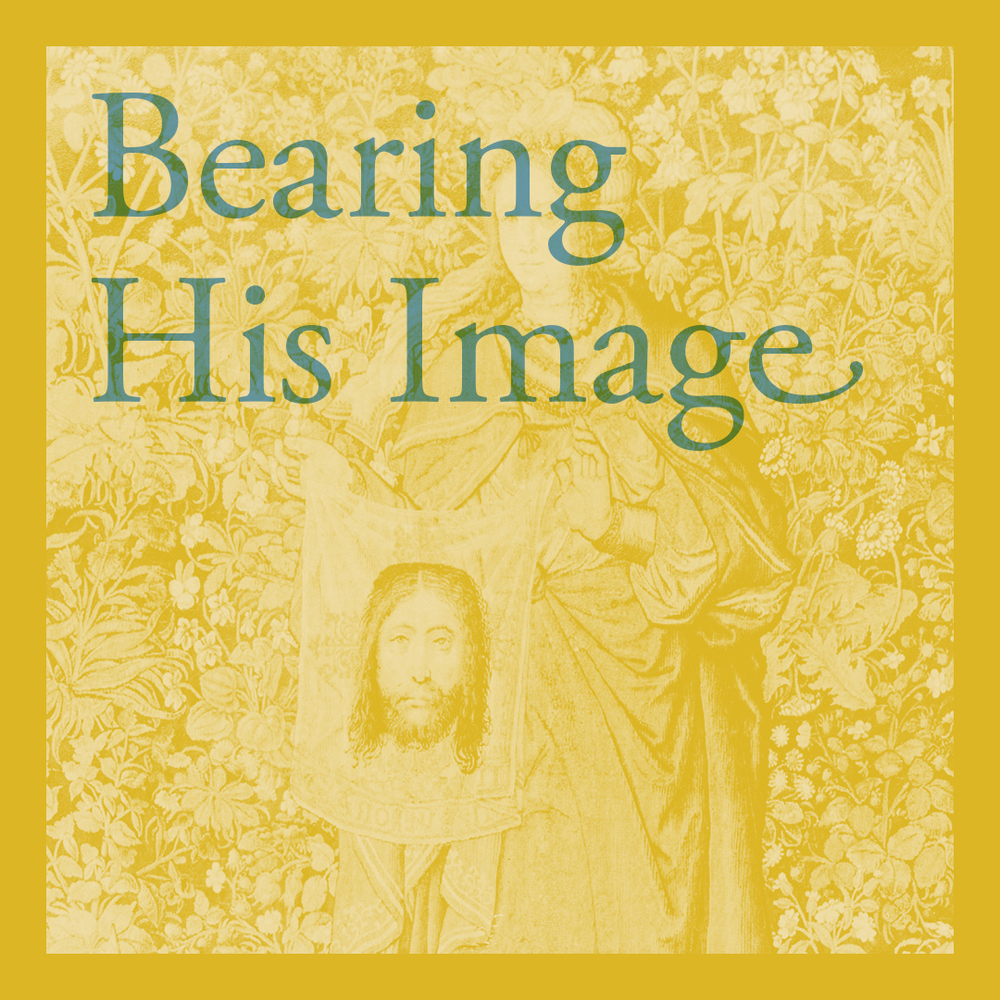
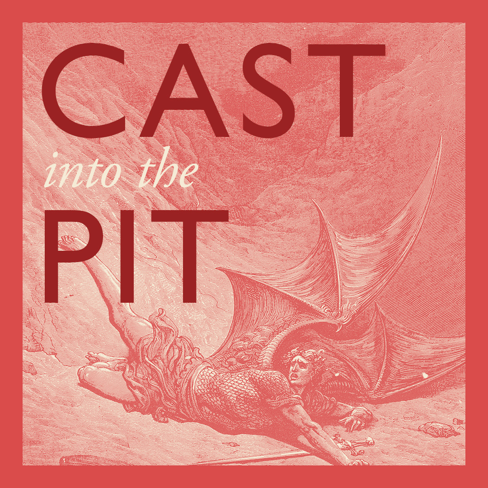

This identity was structured to be used by a small team with tight deadlines and limited resources.
My first goal was to design for the reuse of visual resources without additional editing, across multiple platforms: social media promos, printed material, and in live presentations.
I also created a style guide with templates that streamlined graphic content creation and enabled The Well to develop new images quickly.